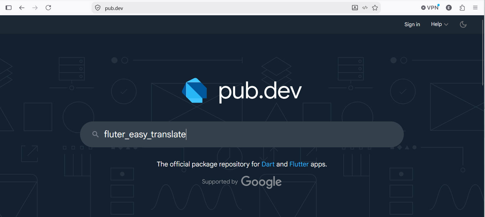
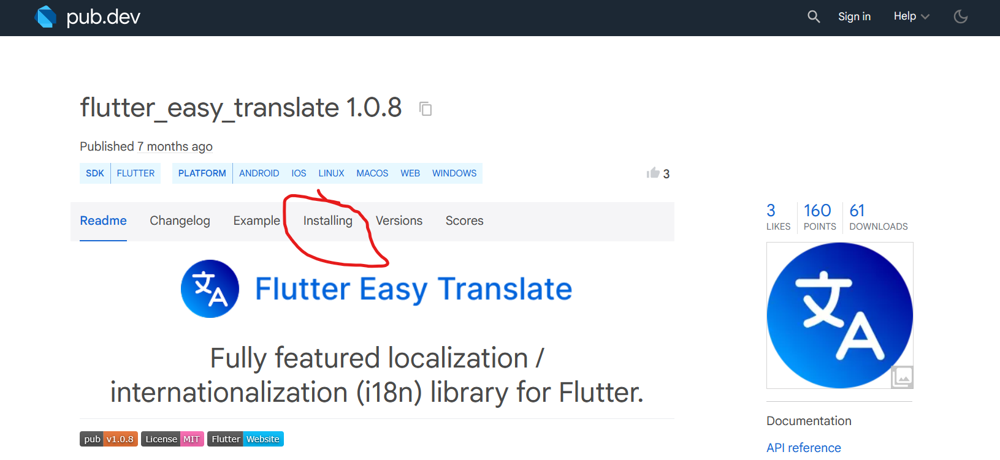
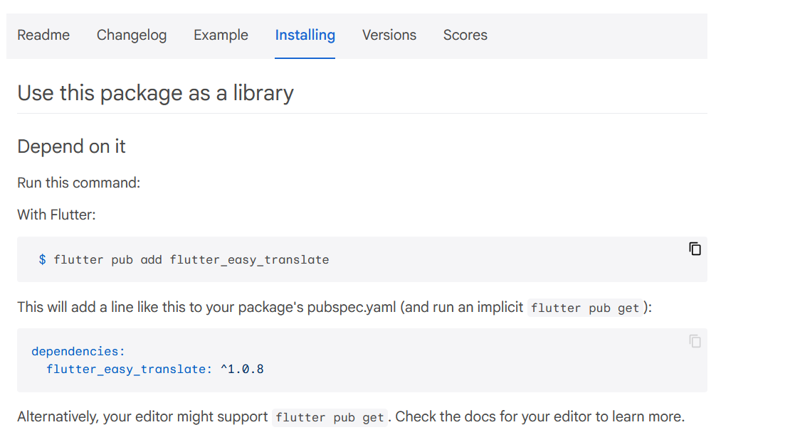
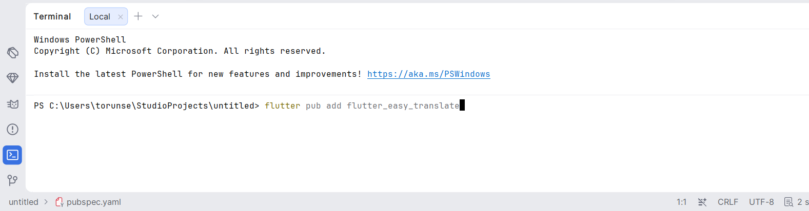
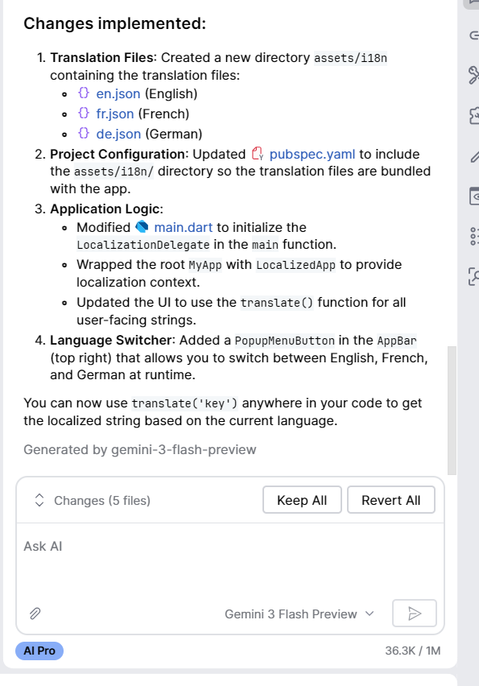

When you write an application, it is better to write the code once and then just change the words that show on the screen when changing languages. There are several libraries that support this, but we will use a library called flutter_easy_translate
There is a website called https://pub.dev/ that is the official repository for Flutter libraries that are not supplied by Google. Other developers can write extra software and then give it to https://pub.dev for distribution and maintenance.
Go to https://pub.dev and search for flutter_easy_translate in the search bar:

If you select the matching result, you should see this page:
Notice at the top of the page, it lists which platforms support this library (Android, IOS, Linux, MacOS, Web, Windows) Click on the tab for "installing":
If you open a command terminal in Android Studio and run the command:flutter pub add flutter_easy_translate

It should add a line to the file pubspec.yaml where it lists the library name and the version to use. Also, since you have edited a file that was committed, there are now uncommitted changes and the filename turns blue.
Looking at the pub.dev website, it lists the Github repository of this library as: https://github.com/belabiedredouane/flutter_easy_translate. If you visit that page, there are manual instructions on how to install and use the library. Alternatively, if you want to start using the library quickly, you can use the Gemini AI Agent that is built-in to AndroidStudio to set it up for you. The prompt you should as for is:
Add support for the package flutter_easy_translate from pub.dev to support English, French, German, Italian, ...
Gemini will think for a while and ask for permission to search for certain files from pub.dev, and to modify files in your project. You can keep clicking "Allow" until it finishes and provides a summary of the changes. You must read what has changed and make sure it made the correct changes!.

Make sure it makes the following changes:
You can select "Keep All", or "Revert All" if the AI is doing something different than those choices.